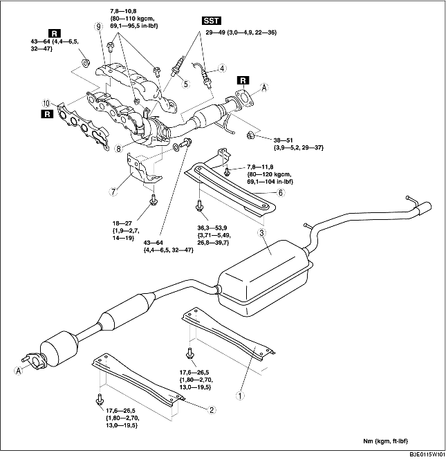

1. Verwijder de afdekplaat. (Zie VERWIJDEREN/PLAATSEN AFDEKPLAAT [LF].)
2. Verwijder de accukap en het luchtkanaal. (Zie VERWIJDEREN/PLAATSEN ACCU [LF].)
3. Neem de minkabel van de accu los.
4. Verwijder het onderpaneel.
5. Verwijder de onderdelen in de aangegeven volgorde, zie de tabel.
6. Plaats de onderdelen in omgekeerde volgorde.

.
1. Draai de onderste bout van de schokdemper en de bevestigingsbout van het subframe achter los, en laat het subframe achter ongeveer 70 mm {2,8 in} zakken. (Zie VERWIJDEREN/PLAATSEN SUBFRAME ACHTER.)
1. Verwijder de voorwielen.
2. Neem de stuuras los aan de zijde van het stuurhuis en de spoorstangen. (Zie VERWIJDEREN/PLAATSEN STUURHUIS EN SPOORSTANGEN.)
3. Verwijder motorsteunrubber nr. 1. (Zie VERWIJDEREN/PLAATSEN MOTOR [LF].)
4. Draai de bouten van uitlaatspruitstuk los.
5. Verwijder de bevestigingsbouten van de stabilisatorstang en het subframe vóór. (Zie VERWIJDEREN/PLAATSEN SUBFRAME VÓÓR.)
6. Draai de bevestigingsbouten los en laat het subframe vóór ongeveer 100 mm {3,94 in} zakken. (Zie VERWIJDEREN/PLAATSEN SUBFRAME VÓÓR.)
7. Ondersteun de flexibele pijp met een spalk, zoals in de afbeelding is aangegeven.
8. Verwijder het uitlaatspruitstuk door het te laten zaken naar de onderzijde van de auto.
1. Draai de bevestigingsmoeren van het uitlaatspruitstuk in de aangegeven volgorde vast.